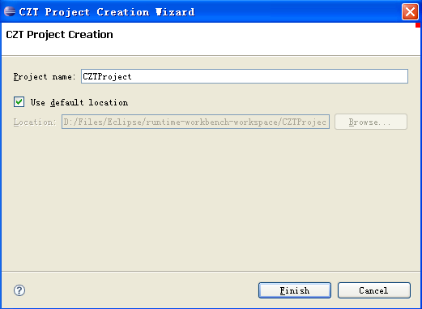

The CZT editor plug-in provides a convenient wizard to help create a new project for editing Z specifications. The wizard can be opened using the menu entry File > New > Project... > CZT > CZT Project.

If the CZT perspective is not opened at the moment, the wizard will ask you whether you want to open the CZT perspective. It is highly recommended that you open it because it will automatically open a set of Eclipse elements useful for the CZT development. Then the new project will be created and selected in the workbench window.